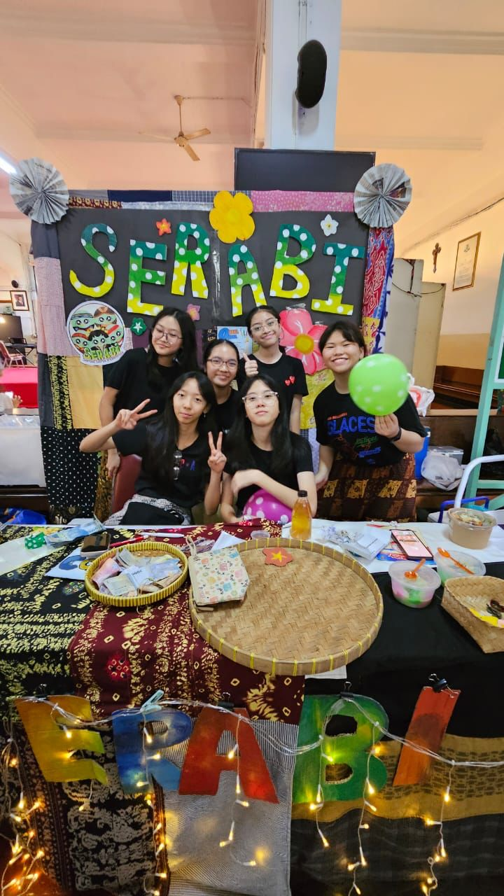
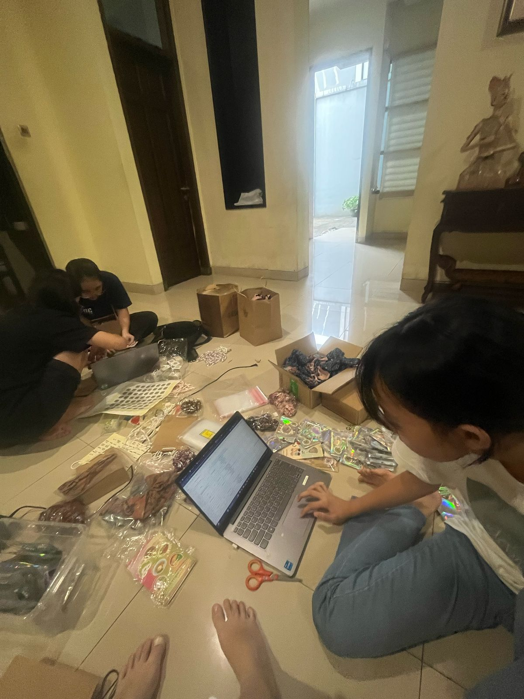
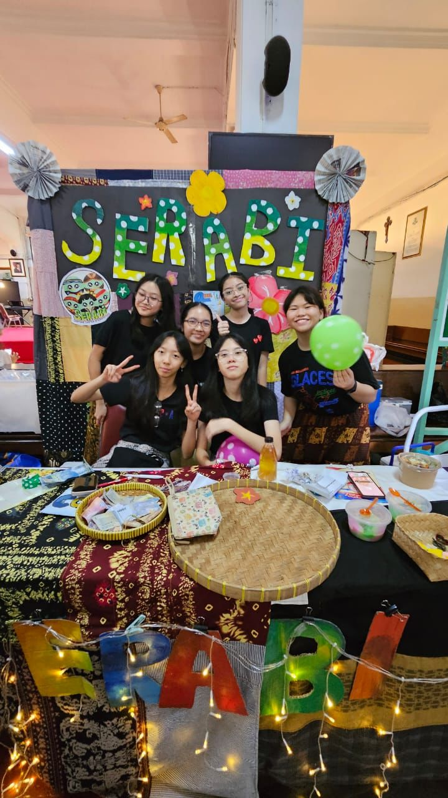
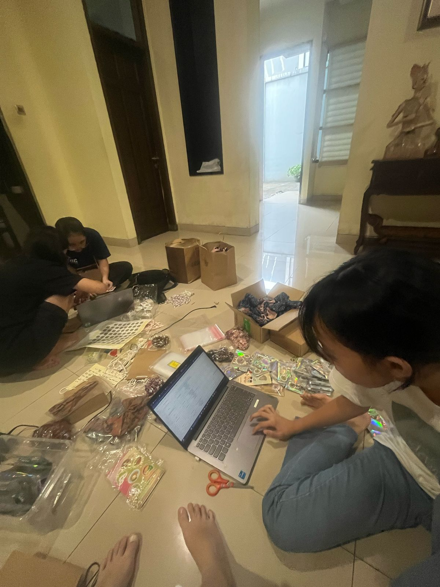
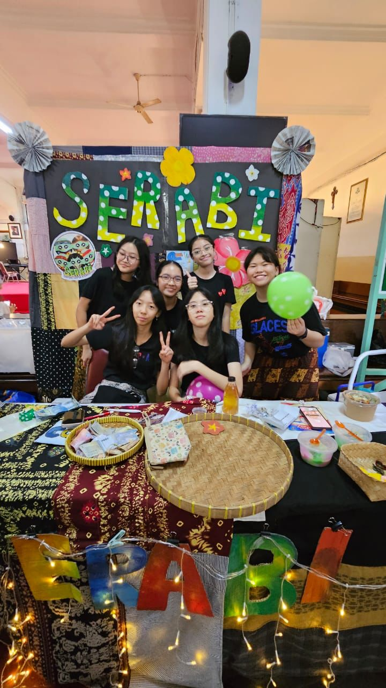
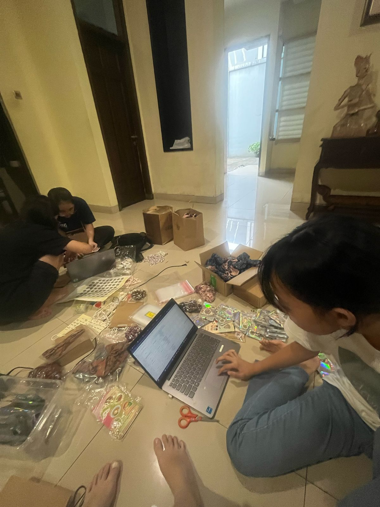
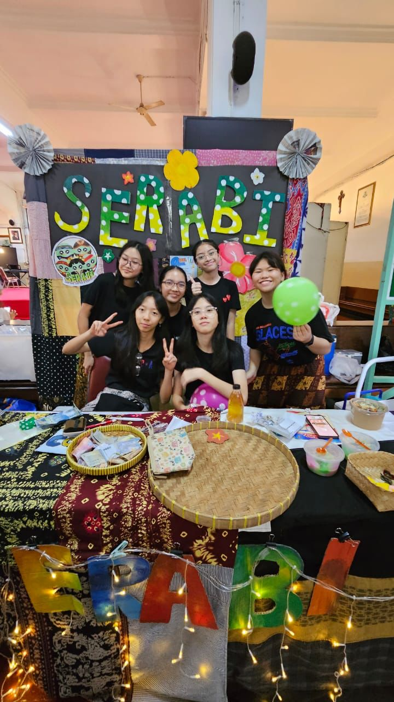
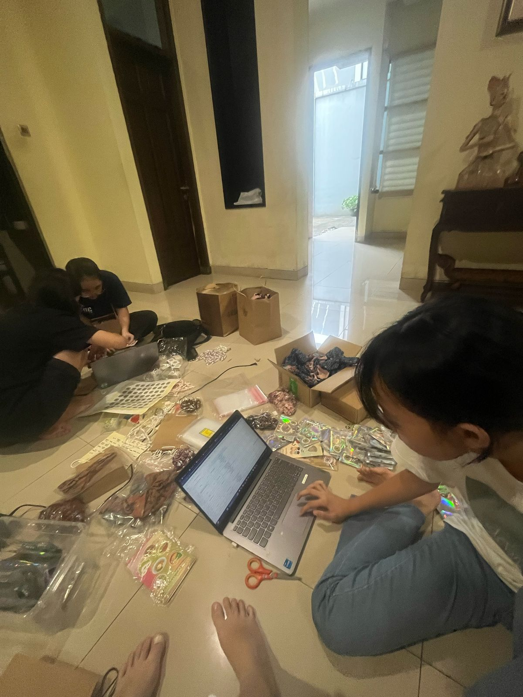

 





In August 2024, the project of Integrated Learning began. Integrated Learning Project is a collaboration project carried out by the 9th graders at Saint Ursula Junior High School with the theme “Nusantara”. The purpose is to apply the theory that we’ve learned practically in real life to acquire different experiences. There are two practical events of the project: a bazaar and art performance show. The graduation depends on the project. It started with the teachers dividing us into groups that are not familiar to each other, so the adaptation was needed to make a cohesive group. Our group dynamics began from a commitment from each member of the group. Then, the name of the group logo design and products that would be sold have to be considered thoroughly so that the product could be useful and become a characteristic of our group. At the end, a bazaar would be held on January 14th to sell the products that had been made, and an art performance would take place on January 16th.
The challenges had occurred from the beginning when we made the group. At first, we had different opinions about almost everything, from choosing the group members to deciding on our roles. The group name, logo, and the product had to be decided in a short time. Every member had unique ideas, which sometimes led to disagreements. Despite the differences, the obstacle must be overcome. Fortunately, when our ego was put aside, the project could continue to the next process. The product testing phase was even more challenging. Our experiments in the lab didn’t work as well as planned, so much time had been lost during the work before it worked. It's a different story when sewing, sometimes there were things such as the sewing machine was stuck, and the fabric was torn. Our hearts were broken so many times. There were moments when we felt overwhelmed, especially when deadlines approached, but we kept pushing forward. Not all of us have the same skills so we have to manage the task properly. Not much different from our art performance, we only have a short time and we have to be able to put together our group's ideas with other groups. We had been practicing so many times to present something that could attract the attention of the audience.
At the end, when all the problems were solved, the satisfactions we felt were priceless. We were all able to get through this with hard work, patience, cooperation, and teamwork. We had known our talent, moreover, we knew more about ourselves. The day had come, the bazaar was successful and the art performances were stunning. We treasure the support from parents, teachers, and friends is very important. We are also a group that managed to become closer and understand each other, which, from the beginning, we could not know and understand each other. We acquire not only relationships and best friends but also responsibility, solidarity, better communication, problem-solving, and respect, which have grown in our personality through the project. We also understand that commitment is not an easy thing and we have been trained in this since we were young.